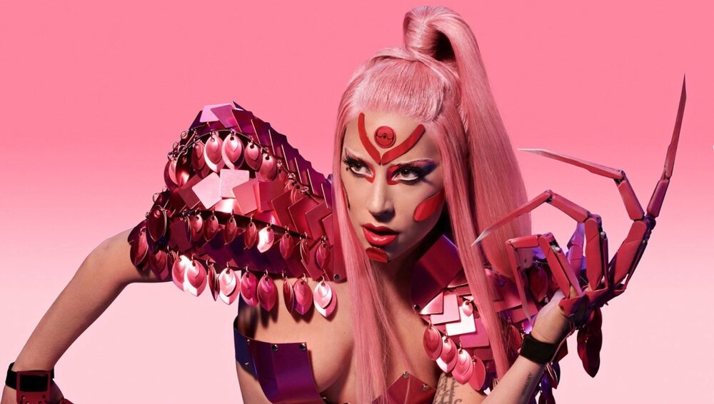
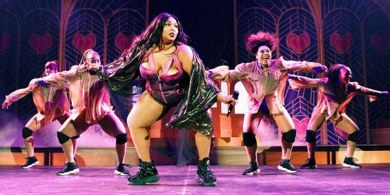

No one quite knows what pop music will sound like in the future, but I have identified a few artists who I feel are going to change the scene of pop music.
Top Album:
Chromatica - Lady Gaga

It has been four long years that Little Monsters have anxiously awaited the release of LG6. Alas, the time has finally come. Lady Gaga is returning bigger than ever with a mega upbeat dance pop fusion album titled "Chromatica". Recent reviews of the music say it’s her most consistent album to date and that each track on the album competes with one another to be the hit single. It’s a collection of music that encourages dancing through the sadness with emotional power pop ballads, electronic melodies, and club dance beats. Her lead single “Stupid Love” was to me, pop perfection, so she’s bound to serve in the new era.
Hit Songs:
"Physical", "Don't Start Now", and "Future Nostalgia" - Dua Lipa
I firmly believe that Dua Lipa is the future of pop music. Every song that she has released leading up to her album which drops later this month is an absolute bop. Dua’s bright 80s influence dance beats are perfectly paired with her confident female empowerment lyrics. Her music is fun, colorful, and unique amongst many of the slower hip hop songs that are being released today. If the rest of her album is anything like the her three lead singles, then the album will be nothing short of pop perfection. Her crown awaits her.
Top Artist:
Lizzo

Lizzo had quite a year with her music reaching new heights and new audiences all over the country. You might be surprised that I chose her to be the featured artist in the future of pop category, but I really feel as though Lizzo’s best is yet come. Not only does she have a crazy talented voice, but her flute playing is also extremely impressive. Her relentless positivity and uplifting songs make her a favorable artist to stan. I don’t know what’s in the works, but whatever it is, the world is not ready.